Данила Блюз продолжает разбираться в тонкостях отдыха в России: на этот раз он расскажет о том, какие опасности ждут вас за городом. В основе его советов — не дурацкие мнения специалистов или сомнительный личный опыт, а классические фильмы ужасов — настоящая энциклопедия по выживанию в современном мире.
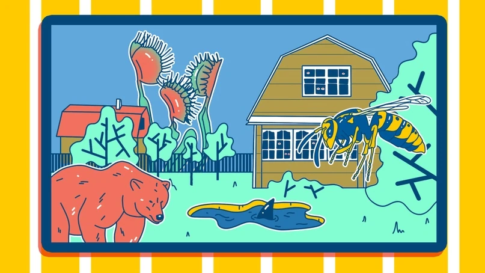
Год потихоньку переворачивается за середину мая, как ленивый жирный пляжник на шезлонге. Значит, пришла пора нам всем бросать затуманенные кальянные, шумные бары, наркоманские клубы и феминистские кафе — собирать манатки и рвать за город. Там хорошо, там речка, костерок, шашлыки и настоящее звездное небо, которого не увидишь в городе из-за смога и светового загрязнения.
Но не спешите обманываться, вся эта благодать таит в себе массу опасностей, о которых нас не раз предупреждали создатели хорроров. Давайте на примере классических ужастиков разберемся, чего стоит опасаться, выезжая за город.
Вода
Утонуть пьяным в какой-нибудь говноречке — это самый лайт. Как учит поп-культура, настоящие опасности исходят от обитателей подводных глубин. Конечно, акул, кракенов и годзилл на мелководье у нас не найдешь, однако это не значит, что надо расслаблять булки и с разбегу сигать в неизвестную речку. А вдруг тут рядом военные проводили эксперименты? Или химический завод сбрасывал свои отходы?
“Пираньи” (реж. Джо Данте, 1978 г.)
Из специального военного водохранилища в речку оказываются выпущены экспериментальные супермутантские пираньи. Оказаться рядом с обычными пираньями в одной реке — уже отличный сюжет для ужастика, а эти рыбехи больше, сильнее и кровожаднее стандартных представителей. Вдобавок они приспособлены к жизни в соленой воде, что означает скорейшее их распространение по всему миру и еще пяток фильмов о том, как чешуйчатые людоеды уничтожают отдыхающих на самых роскошных пляжах. Во второй части фильма пираньи еще более зверски мутируют и даже отрастят крылья.
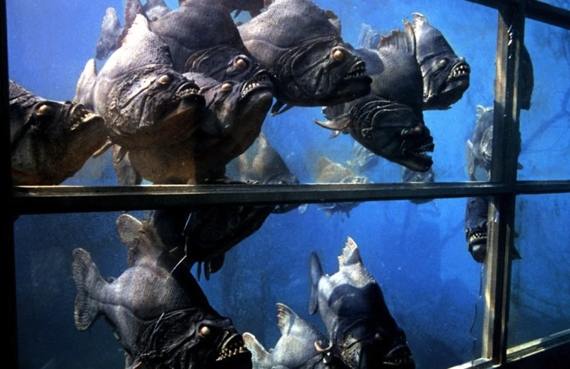
”Бобры-зомби” (реж. Джордан Рубин, 2014 г.)
Еще одна опасность отдыха у пресных водоемов — бобры-зомби. Риск повышается, если вы молодой красавчик с прессом или грудастая студентка. Вообще, создатели фильма довольно легкомысленно подошли к проблеме: сплошные хихоньки да хахоньки и оголтелый постмодерн, на который пошла мода после “Хижины в лесу”. Все вдруг стали такие клевые для обычных слэшеров, такие заумные, как те пидоры из “Крика”: “Ой, мы все знаем про ужастики, мы стебемся над штампами глупых хорроров про зомби-мутантов”.
Эй, секундочку, господа! А если зомби-мутанты окажутся правдой? Как вы тогда посмеетесь? Вместо того чтобы сделать полноценное пособие, которое может однажды спасти кому-то жизнь, все наши киноделы вдруг превратились в хохмачей и снимают теперь какие-то чернушные комедии, а не ужастики. Это упадок, это кризис, о котором давно уже говорит нам философ Александр Дугин. Да только кто ж его слушает. Но кинцо ради общего образования все же гляньте.
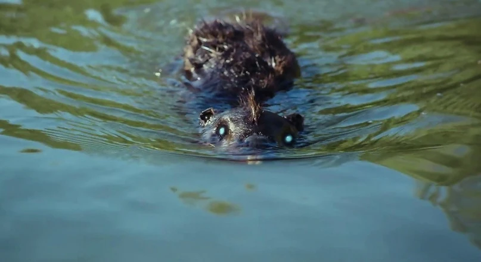
“Анаконда” (реж. Луис Льоса, 1997 г.)
Еще одна речная сволочь, которой стоит опасаться, ныряя в воду. Хотя фильм не столько об огромной змеюке-живоглоте, сколько о людях и о том, что бояться стоит в первую очередь их. В ролях бравый Айс Кьюб и совсем молодая Дженнифер Лопес.
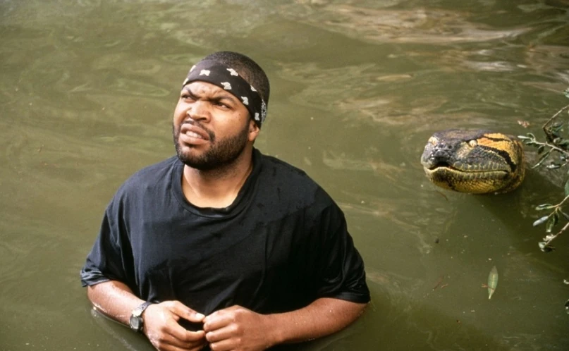
“Лэйк Плэсид: Озеро страха” (реж. Стив Майнер, 1999 г.)
Ну какой отдых на озере без гигантского доисторического аллигатора?! Конечно, в наших широтах такие гады навряд ли водятся, но чем черт не шутит?! Вот, например, в другом фильме 1980 года, который так и называется — “Аллигатор”, здоровенная рептилия долгое время росла в канализации под стоками лаборатории, смывавшей в унитаз мерт��ых подопытных животных. Так что десять раз подумайте, отправляясь рыбачить на лодке: “А может, лучше остаться дома, чем бросаться в пасть к древнему земноводному ублюдку?”
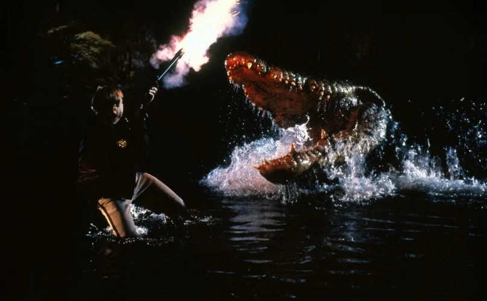
Насекомые
Выезжая за город, не забудьте обмазаться с ног до головы репеллентом от клещей, комаров, клопов и прочих паразитов. А еще лучше прихватите против насекомых дробовик, пару динамитных шашек и мачете.
“Клещи” (реж. Тони Рэндел, 1993 г.)
Энцефалит — самое меньшее из зол при контакте с клещами. Джи Джи Аллин переболел им в детстве и стал прекрасным музыкантом и почтенным гражданином. А вот когда клещ откусывает вам голову, или откладывает в вас яйцо, или высасывает всю кровь — это уже проблема.
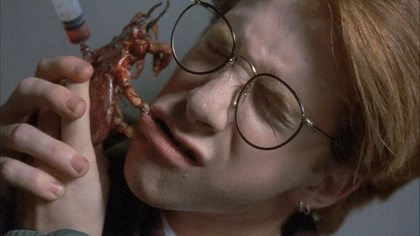
“Они!” (реж. Гордон Дуглас, 1954 г.)
Классика кинематографа, определившая жанр. Фильм учит нас внимательнее подходить к выбору места для отдыха и ни в коем случае не разбивать лагерь вблизи полигонов, испытывавших ядерное оружие. Главные герои фильма — гигантские муравьи, вымахавшие до двух метров в холке из-за радиации. Муравьи стремительно размножаются и угрожают существованию всего человечества!
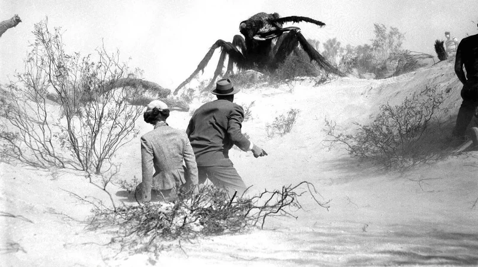
“Рой” (реж. Ирвин Аллен, 1978 г.)
Легко решать вопросы с гигантскими насекомыми — пальнул в него, говнюка, из ракетницы, и всего делов! Другое дело, когда на человечество ополчается огромный рой маленьких пчел-убийц. Им плевать на пули, гранаты, бензопилы и даже огнеметы, — они изничтожают целые города. Поезда летят под откос, самолеты валятся с неба, все сущее горит, взрывается и истошно вопит! Людей не спасают ни мухобойки, ни москитные сетки — мир обречен!
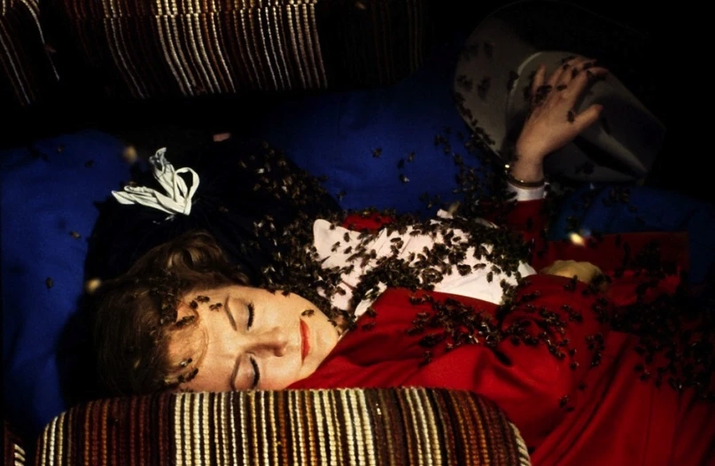
Фауна
У животного мира тоже есть немалый зуб на отдыхающих. Глядите в оба, когда играете в бадминтон или собираете грибы: вполне возможно, из-за кустов за вами следит пара неприятно горящих глаз, и через секунду ваша голова покатится по полянке, как футбольный мячик.
“Птицы” (реж. Альфред Хичкок, 1963 г.)
Еще один классический хоррор в нашей подборке. Старина Хичкок знал толк в жизни и понимал, что однажды природа взбунтуется ни с того с сего на самодовольное человечество и начнет убивать его самым жестоким образом. Обычные птички — голуби, вороны, чайки, воробьи — вдруг сходят с ума и в едином порыве начинают атаковать людей, выклевывать им лица, залезать в рты, отрывать уши и вить в них гнезда. Сволочи, а ведь когда-то на уроке труда я смастерил для вас скворечник!
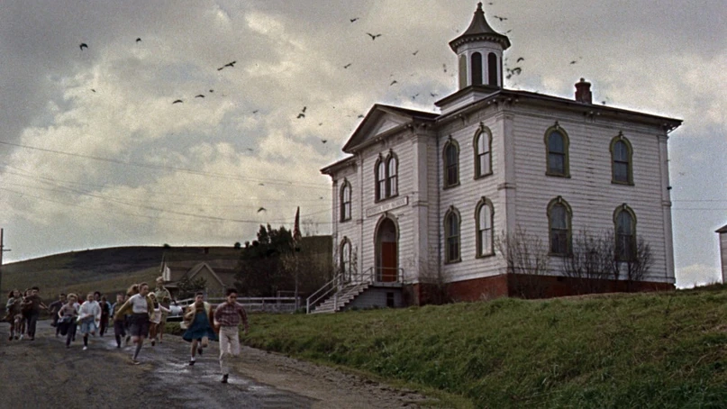
“Схватка” (реж. Джо Карнахан, 2011 г.)
Не столько ужастик, сколько фильм о выживании, но все равно жутко. Герои ленты разбиваются на самолете в какой-то горной глуши и тут же оказываются окружены стаей волков. Страшно подумать, чем бы все закончилось, не окажись в этой компании Лиама Нисона: всех могли загрызть сразу же, и фильм длился бы минут пятнадцать.
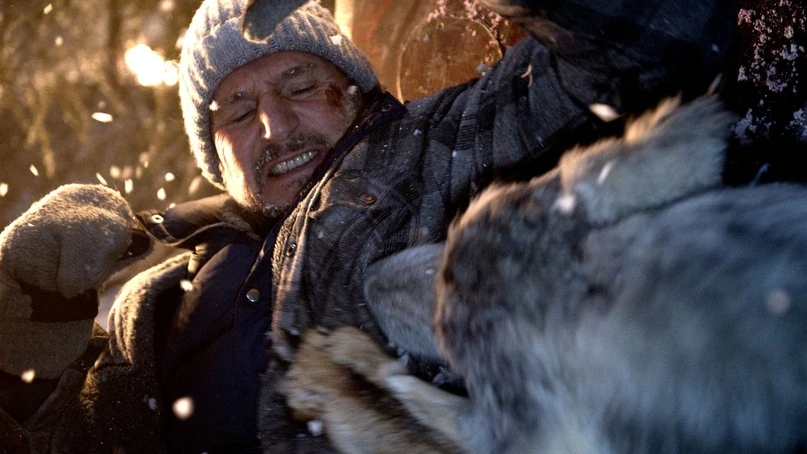
“Паршивая овца” (реж. Джонатан Кинг, 2006 г.)
С хищниками все понятно, ну а что с травоядными? Вот овечки, например? От них-то ничего плохого ждать не приходится? “А вот и нет!” — говорит нам новозеландец Джонатан Кинг. Даже эти живые воплощения невинности могут превратиться в кровожадных монстров, если над ними поработает наука. Забавный трешак в антураже гор и зеленых холмов учит нас, что волки в овечьей шкуре — это фигня. Куда страшнее настоящие овцы.
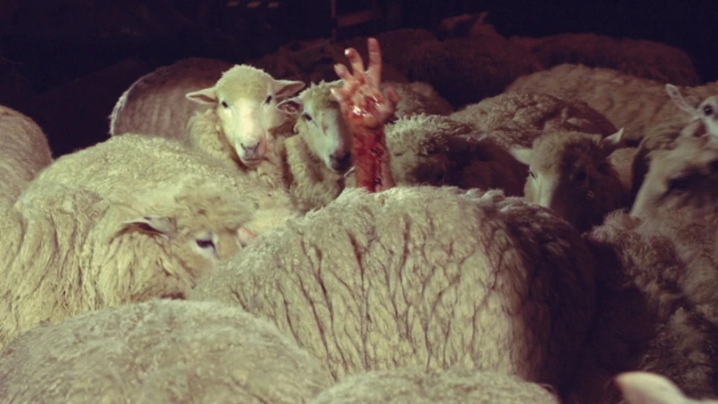
Флора
Вообще, даже и не знаю, зачем кому-то выбираться из города. Природа, очевидно, ненавидит нас, ее главная цель — убить человека! Не зря мы столько веков уничтожали ее. Здесь все против нас: рыбы, птицы, животные, насекомые и даже растения!
“Руины” (реж. Картер Смит, 2008 г.)
Если едете отдыхать, держитесь подальше от всяких заброшенных древностей, особенно если местные жители настойчиво, с ружьем у виска, рекомендуют вам этого не делать. Но что вышел бы за ужастик, поступай все так, как надо? Нет. Героям фильма обязательно надо залезть в самую задницу древней ацтекской пирамиды на съедение каким-то адским лютикам-убийцам.
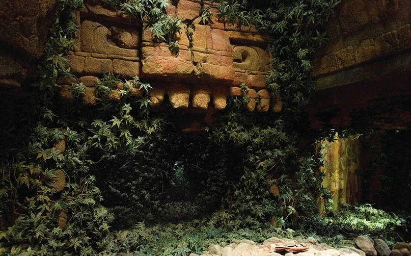
“Вторжение похитителей тел”
Их там целых три версии, 1955, 1978 и 1993 годов. Смотрите какую угодно — от судьбы все равно не уйдешь: рано или поздно ты ляжешь спать, а тебя сожрут и клонируют инопланетные овощи.
Что делать? Уничтожать к чертям эту фауну! Строить заводы, дымить машинами, жечь покрышки — делать все, чтобы инопланетяне не смогли жить на этой планете.
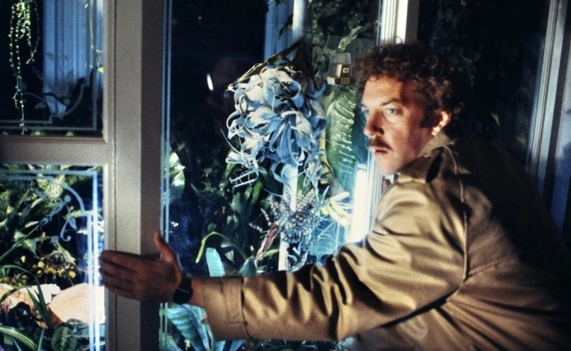
“Явление” (реж. М. Найт Шьямалан, 2008 г.)
Ну и апогей противостояния человека и природы. В этом фильме даже непонятно, с чем и как бороться. Просто в один прекрасный день все люди вдруг ебанулись и начали убивать себя. Рабочие толпами валятся с крыш, словно хармсовские старухи, полицейские достают пистолеты и как по команде стреляют себе в висок, а простые люди расшибают бошки об стены. Подобно балабановскому таксисту, мы воскликнем: “Были же люди как люди и вдруг стали все дебилы! Парадокс”. Но оказывается, что это сама мать-природа поднатужилась и из всех своих спор начала выбрасывать в воздух токсин, от которого людям вдруг очень хочется самоубиться. Таким образом она как бы намекает нам, что слишком уж человечество ей надоело: ползает по планете, как вши по собаке, житья нет.
Так что, горожанин, не едь ты никуда отдыхать. Возьми лучше бензопилу да повыпили все деревья у себя в округе, траву выжги кислотой и закатай в асфальт, цветы в горшках выкинь и поставь вместо них пластиковые. А не то брызнет тебе флора в лицо токсином — и поминай как звали.
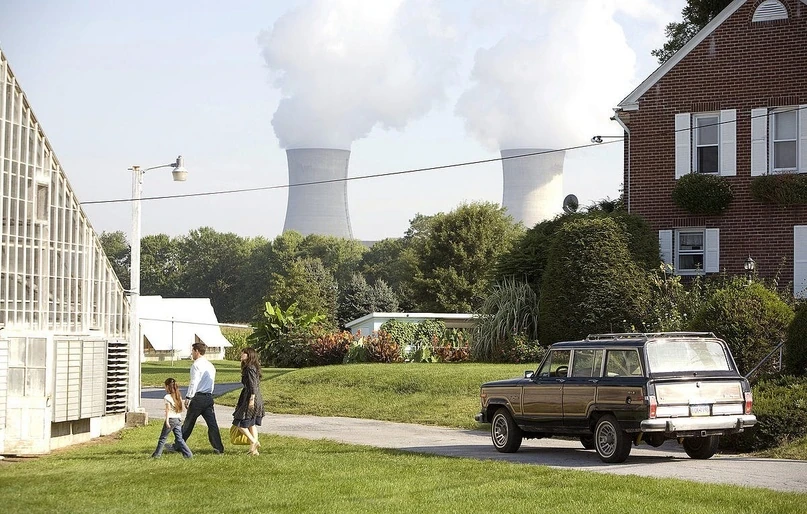